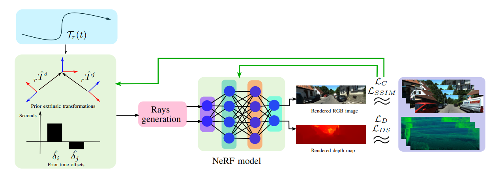

MOISST: Multimodal Optimization of Implicit Scene for SpatioTemporal Calibration
IROS 2023


Bring cameras and LiDAR into a shared spatial and temporal frame by optimizing a neural scene together with sensor calibration.

Method
MOISST uses a shared neural radiance field to connect camera images and LiDAR ranges. Differentiable rendering jointly optimizes the scene, rigid sensor extrinsics and clock offsets against a supplied continuous-time reference trajectory.


Results from the paper
Spatial calibration on KITTI-360
The paper evaluates sequences 0, 1, 2 and 4 with the front-left camera as reference. This spatial-only experiment starts with translation and rotation perturbations; the reported errors average the last ten epochs.
| Sequence | Camera translation (cm) ↓ | Camera rotation (°) ↓ | LiDAR translation (cm) ↓ | LiDAR rotation (°) ↓ |
|---|---|---|---|---|
| 0 | 2.3 ± 0.6 | 0.09 ± 0.02 | 8.2 ± 1.8 | 0.21 ± 0.08 |
| 1 | 1.6 ± 0.4 | 0.09 ± 0.02 | 7.3 ± 2.1 | 0.41 ± 0.08 |
| 2 | 1.2 ± 0.6 | 0.04 ± 0.03 | 13.5 ± 1.8 | 0.18 ± 0.10 |
| 4 | 2.2 ± 0.7 | 0.08 ± 0.06 | 9.9 ± 2.6 | 0.30 ± 0.10 |
Presentation
Research code
neural-calibration prepares raw KITTI-360, nuScenes, PandaSet and Waymo data for independent MOISST, SOAC, 3DGS-Calib, MOISST++ and SOAC++ implementations, with training and sensor-pose export instructions. avoptim-benchmark prepares the twenty benchmark sequences and evaluates Original, provided MOISST++ or custom method poses across ten rendering, structure-from-motion and geometry metrics. Original poses and observation metadata are generated locally from authorized dataset downloads; the provided optimized bundle contains pose matrices only. Training and benchmark preparation use separate commands documented in the repositories.
The results shown here are reported paper results. See the repositories for implementation details and validation scope.
Citation
BibTeX
@inproceedings{herau2023moisst,
title={MOISST: Multimodal Optimization of Implicit Scene for SpatioTemporal Calibration},
author={Herau, Quentin and Piasco, Nathan and Bennehar, Moussab and Rold{\~a}o, Luis and Tsishkou, Dzmitry and Migniot, Cyrille and Vasseur, Pascal and Demonceaux, C{\'e}dric},
booktitle={2023 IEEE/RSJ International Conference on Intelligent Robots and Systems (IROS)},
pages={1810--1817},
year={2023},
organization={IEEE}
}